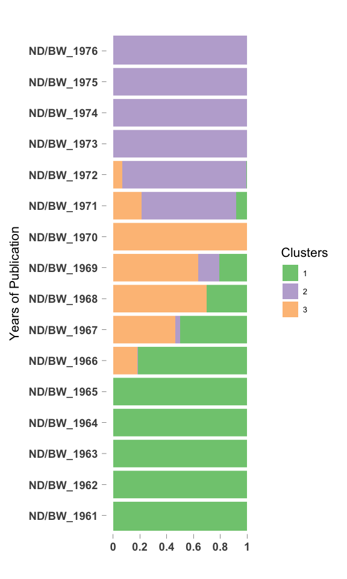
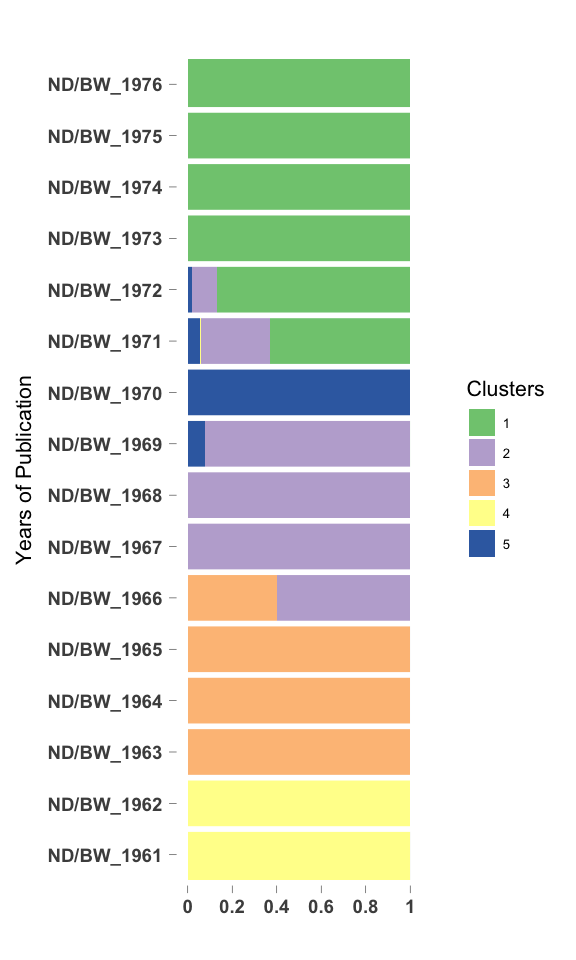

CountClust on Black World Negro Digest - no black, negro terms
Kushal K Dey
4/11/2018
Intro
We apply CountClust on the word frequencies for yearly data from Black World/Negro Digest articles. We remove identity terms - black, negro and afroamerican - and see which terms affect the clustering now. Here we present the results for the second case study.
Packages
library(CountClust)
library(ggplot2)Load Data
tab_bl_nd <- get(load("../output/Document_Term_Matrix_BW_ND.rda"))
all_words_bl_nd <- get(load("../output/all_words_BW_ND.rda"))Processing and Filtering Data
Next we fit the CountClust model to the tabulated counts data. We first remove the words that occur in only one or two years of text data.
low_occur_words <- apply(tab_bl_nd, 2, function(x) return(sum(x[x!=0])))
tab2_bl_nd <- tab_bl_nd[, which(low_occur_words > 2)]Also remove the words that have just two characters as they are usually suffix-es or wrongly interpreted characters.
tab3_bl_nd <- tab2_bl_nd[, which(nchar(colnames(tab2_bl_nd)) > 2)]
negro_words <- grep("negro", colnames(tab3_bl_nd))
black_words <- match(c("black", "blacks", "blackman"), colnames(tab3_bl_nd))
afroamerican_words <- match(c("african", "afroamerican"), colnames(tab3_bl_nd))
tab4_bl_nd <- tab3_bl_nd[, - c(negro_words, black_words, afroamerican_words)]Fit CountClust
topic_clus <- list()
for(k in 2:5){
topic_clus[[k]] <- maptpx::topics(tab4_bl_nd, K=k, tol = 1)
}
save(topic_clus, file = "../output/BL_ND_CountClust_no_black_negro.rda")topic_clus <- get(load("../output/BL_ND_CountClust_no_black_negro.rda"))Visualization
K= 2
omega <- topic_clus[[2]]$omega
annotation <- data.frame(
sample_id = paste0("X", c(1:NROW(omega))),
tissue_label = factor(rownames(omega),
levels = rownames(omega)))
rownames(omega) <- annotation$sample_id;
StructureGGplot(omega = omega,
annotation = annotation,
palette = RColorBrewer::brewer.pal(8, "Accent"),
yaxis_label = "Years of Publication",
order_sample = TRUE,
axis_tick = list(axis_ticks_length = .1,
axis_ticks_lwd_y = .1,
axis_ticks_lwd_x = .1,
axis_label_size = 7,
axis_label_face = "bold"))
K= 3
omega <- topic_clus[[3]]$omega
annotation <- data.frame(
sample_id = paste0("X", c(1:NROW(omega))),
tissue_label = factor(rownames(omega),
levels = rownames(omega)))
rownames(omega) <- annotation$sample_id;
StructureGGplot(omega = omega,
annotation = annotation,
palette = RColorBrewer::brewer.pal(8, "Accent"),
yaxis_label = "Years of Publication",
order_sample = TRUE,
axis_tick = list(axis_ticks_length = .1,
axis_ticks_lwd_y = .1,
axis_ticks_lwd_x = .1,
axis_label_size = 7,
axis_label_face = "bold"))
K= 4
omega <- topic_clus[[4]]$omega
annotation <- data.frame(
sample_id = paste0("X", c(1:NROW(omega))),
tissue_label = factor(rownames(omega),
levels = rownames(omega)))
rownames(omega) <- annotation$sample_id;
StructureGGplot(omega = omega,
annotation = annotation,
palette = RColorBrewer::brewer.pal(8, "Accent"),
yaxis_label = "Years of Publication",
order_sample = TRUE,
axis_tick = list(axis_ticks_length = .1,
axis_ticks_lwd_y = .1,
axis_ticks_lwd_x = .1,
axis_label_size = 7,
axis_label_face = "bold"))
K= 5
omega <- topic_clus[[5]]$omega
annotation <- data.frame(
sample_id = paste0("X", c(1:NROW(omega))),
tissue_label = factor(rownames(omega),
levels = rownames(omega)))
rownames(omega) <- annotation$sample_id;
StructureGGplot(omega = omega,
annotation = annotation,
palette = RColorBrewer::brewer.pal(8, "Accent"),
yaxis_label = "Years of Publication",
order_sample = TRUE,
axis_tick = list(axis_ticks_length = .1,
axis_ticks_lwd_y = .1,
axis_ticks_lwd_x = .1,
axis_label_size = 7,
axis_label_face = "bold"))
Top driving words in clusters
K=2
out <- ExtractTopFeatures(topic_clus[[2]]$theta, top_features = 100, method = "poisson", options = "min")
driving_words <- t(apply(out$indices, c(1,2), function(x) return(rownames(topic_clus[[2]]$theta)[x])))
driving_words[1:50,]## [,1] [,2]
## [1,] "theater" "chenault"
## [2,] "baraka" "civil_rights"
## [3,] "yuh" "libby"
## [4,] "tanzania" "cent"
## [5,] "imamu" "joey"
## [6,] "liberation" "lennie"
## [7,] "oau" "barney"
## [8,] "afro" "smythe"
## [9,] "afrikan" "dilman"
## [10,] "moma" "baptists"
## [11,] "unita" "rashman"
## [12,] "broadside" "maury"
## [13,] "amiri" "twain"
## [14,] "ali" "segregation"
## [15,] "euroamerican" "righters"
## [16,] "nana" "eaton"
## [17,] "mpla" "henson"
## [18,] "ezeulu" "per"
## [19,] "kurunmi" "colored"
## [20,] "angela" "she"
## [21,] "lifestyle" "talley"
## [22,] "aesthetic" "manny"
## [23,] "literature" "luke"
## [24,] "barakas" "russ"
## [25,] "ideology" "mitch"
## [26,] "addison" "hosea"
## [27,] "studies" "despres"
## [28,] "karenga" "nalc"
## [29,] "sonia" "sokagakkai"
## [30,] "africa" "confederacy"
## [31,] "afroamericans" "buyer"
## [32,] "johnnyboy" "bearcat"
## [33,] "carolyn" "segun"
## [34,] "people" "fremont"
## [35,] "guineabissau" "median"
## [36,] "panafricanist" "pastors"
## [37,] "poetry" "peary"
## [38,] "naz" "kabbo"
## [39,] "kuumba" "said"
## [40,] "political" "satch"
## [41,] "bibliography" "essie"
## [42,] "alsc" "tina"
## [43,] "cabral" "corinna"
## [44,] "guyana" "employment"
## [45,] "sonnet" "amsac"
## [46,] "fuck" "echewa"
## [47,] "vol" "boxers"
## [48,] "zaire" "discrimination"
## [49,] "bois" "levee"
## [50,] "bullins" "veneuse"K=3
out <- ExtractTopFeatures(topic_clus[[3]]$theta, top_features = 100, method = "poisson", options = "min")
driving_words <- t(apply(out$indices, c(1,2), function(x) return(rownames(topic_clus[[2]]$theta)[x])))
driving_words[1:50,]## [,1] [,2] [,3]
## [1,] "libby" "afrikan" "kurunmi"
## [2,] "civil_rights" "unita" "chenault"
## [3,] "cent" "mpla" "johnnyboy"
## [4,] "lennie" "angela" "yuh"
## [5,] "barney" "barakas" "reva"
## [6,] "smythe" "naz" "arkestra"
## [7,] "dilman" "kuumba" "baga"
## [8,] "baptists" "alsc" "hondo"
## [9,] "maury" "zaire" "mma"
## [10,] "eaton" "ignatius" "rashman"
## [11,] "twain" "prez" "students"
## [12,] "henson" "eec" "sri"
## [13,] "colored" "evonne" "pip"
## [14,] "segregation" "watergate" "shug"
## [15,] "talley" "brierre" "carie"
## [16,] "mitch" "olaad" "hawa"
## [17,] "hosea" "ald" "ogunmola"
## [18,] "manny" "winesellers" "veneuse"
## [19,] "nalc" "burnside" "swahili"
## [20,] "sokagakkai" "hoodoo" "randalene"
## [21,] "confederacy" "umuaro" "moma"
## [22,] "despres" "frelimo" "davey"
## [23,] "righters" "blackamerican" "fuseni"
## [24,] "luke" "kalamu" "mckissick"
## [25,] "bearcat" "mcgovern" "black_power"
## [26,] "segun" "kabnis" "sug"
## [27,] "fremont" "brisbane" "simples"
## [28,] "pastors" "panafrikanists" "lorca"
## [29,] "peary" "panafricanists" "mothafuckin"
## [30,] "kabbo" "ayi" "bumper"
## [31,] "per" "armah" "apa"
## [32,] "satch" "ulu" "soulbook"
## [33,] "essie" "fnla" "cdc"
## [34,] "corinna" "pittman" "leroi"
## [35,] "echewa" "gary" "scheid"
## [36,] "boxers" "oshea" "shona"
## [37,] "employment" "baraka" "dap"
## [38,] "caliver" "haki" "jimbo"
## [39,] "discrimination" "madhubuti" "pseudocreep"
## [40,] "keckley" "bta" "nmc"
## [41,] "macrinus" "awoonor" "sonny"
## [42,] "rowan" "biedermann" "calladay"
## [43,] "rights" "sisterwoman" "kearney"
## [44,] "theatres" "amilcar" "lapido"
## [45,] "meetrie" "himes" "skoboloff"
## [46,] "nongraded" "gospel" "benji"
## [47,] "amanda" "afrika" "harolds"
## [48,] "morrie" "chaka" "khartoum"
## [49,] "marihuana" "vol" "wright"
## [50,] "tsolo" "ralokae" "perf"K=4
out <- ExtractTopFeatures(topic_clus[[4]]$theta, top_features = 100, method = "poisson", options = "min")
driving_words <- t(apply(out$indices, c(1,2), function(x) return(rownames(topic_clus[[2]]$theta)[x])))
driving_words[1:50,]## [,1] [,2] [,3] [,4]
## [1,] "libby" "afrikan" "chenault" "kurunmi"
## [2,] "smythe" "unita" "johnnyboy" "arkestra"
## [3,] "dilman" "mpla" "reva" "baga"
## [4,] "baptists" "angela" "ignatius" "hondo"
## [5,] "maury" "barakas" "rashman" "mma"
## [6,] "eaton" "naz" "yuh" "sri"
## [7,] "henson" "kuumba" "shug" "carie"
## [8,] "hosea" "alsc" "veneuse" "hawa"
## [9,] "mitch" "zaire" "oshea" "ogunmola"
## [10,] "manny" "prez" "biedermann" "randalene"
## [11,] "nalc" "eec" "moma" "fuseni"
## [12,] "sokagakkai" "evonne" "fauntroy" "mothafuckin"
## [13,] "confederacy" "watergate" "davey" "bumper"
## [14,] "despres" "brierre" "mckissick" "dap"
## [15,] "bearcat" "olaad" "viney" "jimbo"
## [16,] "fremont" "ald" "lorca" "pseudocreep"
## [17,] "segun" "winesellers" "apa" "bush"
## [18,] "luke" "burnside" "himes" "calladay"
## [19,] "pastors" "umuaro" "scheid" "kearney"
## [20,] "peary" "frelimo" "mabutu" "lapido"
## [21,] "kabbo" "blackamerican" "soulbook" "skoboloff"
## [22,] "satch" "kalamu" "cdc" "studies"
## [23,] "essie" "kabnis" "nmc" "afrodisia"
## [24,] "corinna" "panafrikanists" "snooks" "cudjoes"
## [25,] "boxers" "panafricanists" "otika" "duh"
## [26,] "echewa" "ayi" "njerie" "ijaye"
## [27,] "segregation" "armah" "benji" "kitabu"
## [28,] "per" "ulu" "khartoum" "pimpleton"
## [29,] "caliver" "fnla" "himess" "pukka"
## [30,] "keckley" "pittman" "beetlecreek" "asa"
## [31,] "rowan" "haki" "selfhood" "cookbooks"
## [32,] "macrinus" "madhubuti" "malcolm" "daps"
## [33,] "meetrie" "bta" "johnnyboys" "egba"
## [34,] "cent" "gospel" "mazeway" "kakilambe"
## [35,] "morrie" "afrika" "goldwyn" "nimba"
## [36,] "marihuana" "sisterwoman" "dhey" "njoka"
## [37,] "tsolo" "amilcar" "rolla" "secularism"
## [38,] "bolen" "ralokae" "chenaults" "marvin"
## [39,] "wicker" "detente" "isom" "swahili"
## [40,] "pigmented" "dorseys" "lory" "astroinfinity"
## [41,] "healy" "sundiata" "lottie" "bratta"
## [42,] "arnie" "xlove" "wan" "mythscience"
## [43,] "mumba" "galethebege" "lucybelle" "soussous"
## [44,] "erics" "kwei" "stonewall" "sris"
## [45,] "snick" "elfreda" "bogalusa" "stayinschool"
## [46,] "caracalla" "owusu" "squirewell" "whiteeyed"
## [47,] "ogodi" "walters" "mabbe" "pip"
## [48,] "confederates" "angola" "gelasius" "sonny"
## [49,] "somers" "macebuh" "zikism" "akans"
## [50,] "higginbotham" "savimbi" "revitalization" "alfonso"K=5
out <- ExtractTopFeatures(topic_clus[[5]]$theta, top_features = 100, method = "poisson", options = "min")
driving_words <- t(apply(out$indices, c(1,2), function(x) return(rownames(topic_clus[[2]]$theta)[x])))
driving_words[1:50,]## [,1] [,2] [,3] [,4]
## [1,] "afrikan" "chenault" "libby" "nalc"
## [2,] "unita" "johnnyboy" "dilman" "bearcat"
## [3,] "mpla" "reva" "eaton" "satch"
## [4,] "angela" "smythe" "mitch" "corinna"
## [5,] "barakas" "rashman" "sokagakkai" "keckley"
## [6,] "naz" "yuh" "segun" "marihuana"
## [7,] "kuumba" "shug" "kabbo" "mumba"
## [8,] "alsc" "manny" "peary" "somers"
## [9,] "zaire" "despres" "essie" "labresch"
## [10,] "ignatius" "veneuse" "echewa" "puddin"
## [11,] "prez" "moma" "caliver" "corinnas"
## [12,] "eec" "davey" "macrinus" "ciaa"
## [13,] "evonne" "morrie" "meetrie" "carsons"
## [14,] "watergate" "mckissick" "tsolo" "jabloski"
## [15,] "brierre" "bolen" "wicker" "tca"
## [16,] "olaad" "pigmented" "healy" "lennie"
## [17,] "ald" "lorca" "caracalla" "bratton"
## [18,] "winesellers" "arnie" "ogodi" "flynn"
## [19,] "burnside" "apa" "snick" "leadbellys"
## [20,] "umuaro" "soulbook" "erics" "jlc"
## [21,] "frelimo" "scheid" "higginbotham" "reufus"
## [22,] "blackamerican" "cdc" "franklinton" "rusick"
## [23,] "kalamu" "nmc" "adah" "ashwood"
## [24,] "kabnis" "poyas" "bronzevilles" "coloureds"
## [25,] "panafrikanists" "benji" "bowman" "wrestlers"
## [26,] "ayi" "khartoum" "letty" "batters"
## [27,] "panafricanists" "johnnyboys" "nichiren" "galey"
## [28,] "armah" "mazeway" "buddhism" "linebacker"
## [29,] "ulu" "dhey" "hemoglobin" "marge"
## [30,] "pittman" "rolla" "shoshu" "durban"
## [31,] "fnla" "chenaults" "keavy" "friar"
## [32,] "oshea" "isom" "carlyle" "grannie"
## [33,] "haki" "lory" "temba" "millennium"
## [34,] "madhubuti" "lottie" "wss" "vannie"
## [35,] "bta" "malcolm" "vladosk" "hightower"
## [36,] "awoonor" "lucybelle" "ardrey" "kraley"
## [37,] "biedermann" "stonewall" "dinnett" "tesch"
## [38,] "sisterwoman" "bogalusa" "dorman" "leadbelly"
## [39,] "amilcar" "wynton" "barb" "clancy"
## [40,] "ralokae" "mabbe" "jamie" "lancaster"
## [41,] "detente" "gelasius" "dodger" "meany"
## [42,] "dorseys" "zikism" "alessandro" "shipp"
## [43,] "sundiata" "cwh" "herron" "gale"
## [44,] "xlove" "lotties" "caracallas" "lincoln"
## [45,] "galethebege" "oaklands" "pancho" "hosea"
## [46,] "kwei" "alba" "umia" "lahoma"
## [47,] "gospel" "mahdi" "celia" "mormon"
## [48,] "elfreda" "revas" "steamer" "previn"
## [49,] "owusu" "hausafulani" "medem" "sacajawea"
## [50,] "walters" "kwoli" "duane" "tcas"
## [,5]
## [1,] "kurunmi"
## [2,] "arkestra"
## [3,] "baga"
## [4,] "hondo"
## [5,] "mma"
## [6,] "sri"
## [7,] "carie"
## [8,] "hawa"
## [9,] "ogunmola"
## [10,] "randalene"
## [11,] "swahili"
## [12,] "fuseni"
## [13,] "mothafuckin"
## [14,] "shona"
## [15,] "dap"
## [16,] "jimbo"
## [17,] "pseudocreep"
## [18,] "bumper"
## [19,] "studies"
## [20,] "marvin"
## [21,] "calladay"
## [22,] "kearney"
## [23,] "lapido"
## [24,] "skoboloff"
## [25,] "asa"
## [26,] "afrodisia"
## [27,] "cudjoes"
## [28,] "duh"
## [29,] "ijaye"
## [30,] "kitabu"
## [31,] "pimpleton"
## [32,] "pukka"
## [33,] "professorships"
## [34,] "cookbooks"
## [35,] "daps"
## [36,] "egba"
## [37,] "kakilambe"
## [38,] "nimba"
## [39,] "njoka"
## [40,] "secularism"
## [41,] "sonny"
## [42,] "astroinfinity"
## [43,] "bratta"
## [44,] "mythscience"
## [45,] "soussous"
## [46,] "sris"
## [47,] "stayinschool"
## [48,] "whiteeyed"
## [49,] "pip"
## [50,] "frog"SessionInfo
sessionInfo()## R version 3.5.0 (2018-04-23)
## Platform: x86_64-apple-darwin15.6.0 (64-bit)
## Running under: macOS Sierra 10.12.6
##
## Matrix products: default
## BLAS: /Library/Frameworks/R.framework/Versions/3.5/Resources/lib/libRblas.0.dylib
## LAPACK: /Library/Frameworks/R.framework/Versions/3.5/Resources/lib/libRlapack.dylib
##
## locale:
## [1] en_US.UTF-8/en_US.UTF-8/en_US.UTF-8/C/en_US.UTF-8/en_US.UTF-8
##
## attached base packages:
## [1] stats graphics grDevices utils datasets methods base
##
## other attached packages:
## [1] CountClust_1.6.1 ggplot2_2.2.1
##
## loaded via a namespace (and not attached):
## [1] Rcpp_0.12.17 RColorBrewer_1.1-2 pillar_1.2.2
## [4] compiler_3.5.0 plyr_1.8.4 tools_3.5.0
## [7] boot_1.3-20 digest_0.6.15 nlme_3.1-137
## [10] evaluate_0.10.1 tibble_1.4.2 gtable_0.2.0
## [13] lattice_0.20-35 mgcv_1.8-23 rlang_0.2.0
## [16] Matrix_1.2-14 yaml_2.1.19 parallel_3.5.0
## [19] cluster_2.0.7-1 stringr_1.3.1 knitr_1.20
## [22] gtools_3.5.0 stats4_3.5.0 rprojroot_1.3-2
## [25] grid_3.5.0 nnet_7.3-12 cowplot_0.9.2
## [28] maptpx_1.9-5 flexmix_2.3-14 rmarkdown_1.9
## [31] limma_3.36.1 reshape2_1.4.3 magrittr_1.5
## [34] MASS_7.3-49 backports_1.1.2 scales_0.5.0
## [37] htmltools_0.3.6 modeltools_0.2-21 permute_0.9-4
## [40] picante_1.7 colorspace_1.3-2 ape_5.1
## [43] stringi_1.2.2 lazyeval_0.2.1 munsell_0.4.3
## [46] slam_0.1-43 SQUAREM_2017.10-1 vegan_2.5-1This R Markdown site was created with workflowr